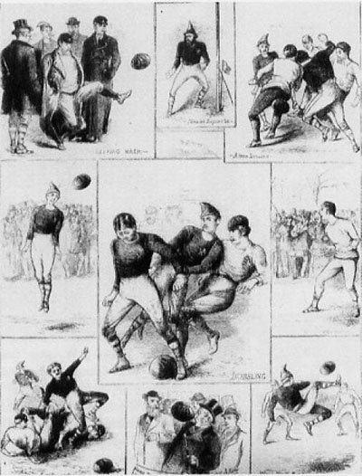

Soccer history
Football (or soccer as the game is called in some parts of the world) has a long history. Football in its current form arose in England in the middle of the 19th century. But alternative versions of the game existed much earlier and are a part of the football history.
The early history of soccer
The first known examples of a team game involving a ball, which was made out of a rock, occurred in old Mesoamerican cultures for over 3,000 years ago. It was by the Aztecs called Tchatali, although various versions of the game were spread over large regions. In some ritual occasions, the ball would symbolize the sun and the captain of the losing team would be sacrificed to the gods. A unique feature of the Mesoamerican ball game versions was a bouncing ball made of rubber – no other early culture had access to rubber.
The first known ball game which also involved kicking took place In China in the 3rd and 2nd century BC under the name cuju. Cuju was played with a round ball (stitched leather with fur or feathers inside) on an area of a square. A modified form of this game later spread to Japan and was by the name of kemari practiced under ceremonial forms.

Perhaps even older cuju was Marn Gook, played by Aboriginal Australians and according to white emigrants in the 1800s a ball game primarily involving kicking. The ball was made by encased leaves or roots. The rules are mostly unknown, but as with many other early versions of the game keeping the ball in the air was probably a chief feature.
Other variety of ball games had been known from Ancient Greece. The ball was made by shreds of leather filled with hair (the first documents of balls filled with air are from the 7th century). Ball games had, however, a low status and was not included at the Panhellenic Games. In the Ancient Rome, games with balls were not included in the entertainment on the big arenas (amphitheaters), but occurred in exercises in the military by the name of Harpastum. It was the Roman culture that would bring football to the British island (Britannica). It is, however, uncertain in which degree the British people were influenced by this variety and in which degree they had developed their own variants.
The game of football takes its form
The most admitted story tells that the game was developed in England in the 12th century. In this century, games that resembled football were played on meadows and roads in England. Besides from kicks, the game involved also punches of the ball with the fist. This early form of football was also much more rough and violent than the modern way of playing.
An important feature of the forerunners to football was that the games involved plenty of people and took place over large areas in towns (an equivalent was played in Florence from the 16th century where it was called Calcio). The rampage of these games would cause damage on the town and sometimes death to the participants. These would be among the reasons for the proclamations against the game that finally was forbidden for several centuries. But the football-like games would return to the streets of London in the 17th century. It would be forbidden again in 1835, but at this stage the game had been established in the public schools.
It took, however, long time until the features of today’s football had been taken into practice. For a long time there was no clear distinction between football and rugby. There were also many variations concerning the size of the ball, the number of players and the length of a match.
The game was often played in schools and two of the predominant schools were Rugby and Eton. At Rugby the rules included the possibility to take up the ball with the hands and the game we today know as rugby has its origin from here. At Eton on the other hand the ball was played exclusively with the feet and this game can be seen as a close predecessor to the modern football. The game in Rugby was called “the running game” while the game in Eton was called “the dribbling game”.
An attempt to create proper rules for the game was done at a meeting in Cambridge in 1848, but a final solution to all questions of rules was not achieved. Another important event in the history of football came about in 1863 in London when the first Football association was formed in England. It was decided that carrying the ball with the hands wasn't allowed. The meeting also resulted in a standardization of the size and weight of the ball. A consequence of the London meeting was that the game was divided into two codes: association football and rugby.
The game would, however, continue to develop for a long time and there was still much flexibility concerning the rules. For one thing, the number of players on the pitch could vary. Neither were uniforms used to distinguish the appearance of the teams. It was also common with players wearing caps – the header was yet to be a part of the game yet.
Another important difference at this stage could be noticed between English and Scottish teams. Whereas the English teams preferred to run forward with the ball in a more rugby fashion, the Scottish chose to pass the ball between their players. It would be the Scottish approach that soon became predominant.
The sport was at first an entertainment for the British working class. Unprecedented amounts of spectators, up to 30,000, would see the big matches in the late 19th century. The game would soon expand by British peoples who traveled to other parts of the world. Especially in South America and India would the interest in football become big.
The first football clubs
Football clubs have existed since the 15th century, but unorganized and without official status. It is therefore hard to decide which the first football club was. Some historians suggest that it was the Foot-Ball Club formed 1824 in Edinburgh. Early clubs were often formed by former school students and the first of this kind was formed in Sheffield in 1855. The oldest among professional football clubs is the English club Notts County that was formed in 1862 and still exists today.
An important step for the emergence of teams was the industrialization that led to larger groups of people meeting at places such as factories, pubs and churches. Football teams were established in the larger cities and the new railroads could bring them to other cities.
In the beginning, football was dominated by public school teams, but later, teams consisting by workers would make up the majority. Another change was successively taking place when some clubs became willing to pay the best players to join their team. This would be the start of a long period of transition, not without friction, in which the game would develop to a professional level.
The motivation behind paying players was not only to win more matches. In the 1880s the interest in the game has moved ahead to a level that tickets were sold to the matches. And finally, in 1885 professional football was legalized and three years later the Football League was established. During the first season, 12 clubs joined the league, but soon more clubs became interested and the competition would consequently expand into more divisions.
For a long time, the British teams would be dominant. After some decades, clubs from Prague, Budapest and Sienna would be the primarily contenders to the British dominance.
As with many things in history, women were for a long time excluded from participating in games. It was not before the late 19th century that women started to play football. The first official women's game took place in Inverness in 1888.
The first competitions
Other milestones were now to follow. Football Association Challenge Cup (FA Cup) became the first important competition when it was run in 1871. The following year a match between two national teams was played for the first time. The match that involved England and Scotland ended 0-0 and was followed by 4,000 people at Hamilton Crescent (the picture shows illustrations from this occasion).
Twelve years later, in 1883, the first international tournament took place and included four national teams: England, Ireland, Scotland and Wales.
Football was for a long time a British phenomenon, but it gradually spread to other European countries. The first game that took place outside Europe occurred in Argentina in 1867, but it was foreign British workers who were involved and not Argentinean citizens.
The Fédération Internationale de Football Association (FIFA) was founded in 1904 and a foundation act was signed by representatives from France, Belgium, Denmark, the Netherlands, Spain, Sweden and Switzerland. England and the other British countries did not join FIFA from the start, they had invented the game and saw no reason to subordinate to an association. Still, they joined in the following year, but would not partake in the World Cup until 1950.
Domestic leagues occurred in many countries. The first was, as already mentioned, the English Football League which was established in 1888. The leagues would by time expand by more divisions, which were based on team performance.
In 1908 would football for the first time be included as an official sport in the Olympic Games. Until the first FIFA World Cup was played in 1930, the Olympic Games football tournament would rank as the most prestigious on a national level. Women's football was not added until 1996.